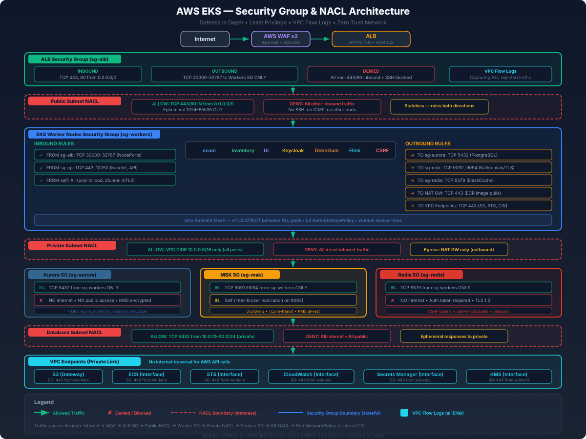
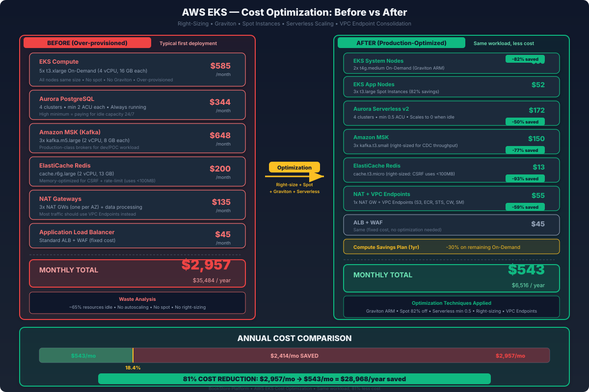

Complete security lockdown and cost-efficient deployment of the BookStore Platform on AWS EKS
AWS uses a layered network security model with two complementary mechanisms: Security Groups (stateful, instance-level) and Network ACLs (stateless, subnet-level). Together they form defense in depth at Layers 3 and 4.

Each tier has dedicated subnets across three AZs and its own Security Group. SGs reference each other by ID — never by CIDR — so adding nodes does not require rule changes.
# ── VPC ──
resource "aws_vpc" "main" {
cidr_block = "10.0.0.0/16"
enable_dns_support = true
enable_dns_hostnames = true
tags = merge(local.common_tags, {
Name = "bookstore-vpc"
})
}
# ── Public Subnets (ALB) — one per AZ ──
resource "aws_subnet" "public" {
count = 3
vpc_id = aws_vpc.main.id
cidr_block = "10.0.${count.index + 1}.0/24"
availability_zone = data.aws_availability_zones.available.names[count.index]
map_public_ip_on_launch = true # ALB needs public IPs
tags = merge(local.common_tags, {
Name = "bookstore-public-${count.index + 1}"
"kubernetes.io/role/elb" = "1" # AWS LB controller tag
"kubernetes.io/cluster/bookstore" = "shared"
})
}
# ── Private Subnets (EKS Workers) — one per AZ ──
resource "aws_subnet" "private" {
count = 3
vpc_id = aws_vpc.main.id
cidr_block = "10.0.${count.index + 10}.0/24"
availability_zone = data.aws_availability_zones.available.names[count.index]
tags = merge(local.common_tags, {
Name = "bookstore-private-${count.index + 1}"
"kubernetes.io/role/internal-elb" = "1"
"kubernetes.io/cluster/bookstore" = "shared"
})
}
# ── Database Subnets (Aurora) — one per AZ ──
resource "aws_subnet" "database" {
count = 3
vpc_id = aws_vpc.main.id
cidr_block = "10.0.${count.index + 20}.0/24"
availability_zone = data.aws_availability_zones.available.names[count.index]
tags = merge(local.common_tags, {
Name = "bookstore-db-${count.index + 1}"
})
}
# ── Data Subnets (MSK, ElastiCache) — one per AZ ──
resource "aws_subnet" "data" {
count = 3
vpc_id = aws_vpc.main.id
cidr_block = "10.0.${count.index + 30}.0/24"
availability_zone = data.aws_availability_zones.available.names[count.index]
tags = merge(local.common_tags, {
Name = "bookstore-data-${count.index + 1}"
})
}
# ── DB Subnet Group for Aurora ──
resource "aws_db_subnet_group" "aurora" {
name = "bookstore-aurora"
subnet_ids = aws_subnet.database[*].id
tags = merge(local.common_tags, {
Name = "bookstore-aurora-subnet-group"
})
}
# ── ElastiCache Subnet Group ──
resource "aws_elasticache_subnet_group" "redis" {
name = "bookstore-redis"
subnet_ids = aws_subnet.data[*].id
}The Application Load Balancer is the only component directly exposed to the internet. Its Security Group allows HTTPS (443) and HTTP (80, for redirect) from anywhere, and forwards traffic exclusively to EKS worker nodes on NodePort range 30000–32767. All other egress is denied.
resource "aws_security_group" "alb" {
name_prefix = "bookstore-alb-"
description = "ALB: internet-facing load balancer"
vpc_id = aws_vpc.main.id
tags = merge(local.common_tags, {
Name = "bookstore-alb-sg"
})
lifecycle {
create_before_destroy = true
}
}
# ── INBOUND: HTTPS from anywhere ──
# This is the front door. TLS terminates at the ALB using an ACM
# certificate. WAF rules (AWS WAF) are evaluated before the request
# reaches the target group.
# Prevents: nothing — this is intentionally open to the internet.
resource "aws_vpc_security_group_ingress_rule" "alb_https" {
security_group_id = aws_security_group.alb.id
description = "HTTPS from internet"
ip_protocol = "tcp"
from_port = 443
to_port = 443
cidr_ipv4 = "0.0.0.0/0" # Public internet
}
# ── INBOUND: HTTP from anywhere (301 redirect to HTTPS) ──
# ALB listener on port 80 issues a 301 redirect to HTTPS.
# No application traffic flows over HTTP — redirect only.
# Prevents: users accidentally using HTTP get forced to HTTPS.
resource "aws_vpc_security_group_ingress_rule" "alb_http" {
security_group_id = aws_security_group.alb.id
description = "HTTP from internet (redirect to HTTPS)"
ip_protocol = "tcp"
from_port = 80
to_port = 80
cidr_ipv4 = "0.0.0.0/0"
}
# ── OUTBOUND: ALB → EKS workers on NodePort range ONLY ──
# ALB forwards to EKS NodePort services (30000-32767).
# This is the ONLY allowed egress — prevents lateral movement
# if the ALB is compromised. Cannot reach Aurora, MSK, or Redis.
resource "aws_vpc_security_group_egress_rule" "alb_to_workers" {
security_group_id = aws_security_group.alb.id
description = "ALB to EKS workers on NodePorts"
ip_protocol = "tcp"
from_port = 30000
to_port = 32767
referenced_security_group_id = aws_security_group.workers.id
}aws_vpc_security_group_egress_rule resources with no 0.0.0.0/0 catch-all. AWS implicitly denies all traffic not matching an allow rule. The ALB cannot talk to Aurora, MSK, Redis, or the internet on any port other than worker NodePorts.
TCP 443 from 0.0.0.0/0TCP 80 from 0.0.0.0/0TCP 30000-32767 to bookstore-worker-sgThe EKS cluster Security Group controls communication between the AWS-managed control plane (API server, etcd, scheduler) and your worker nodes. AWS creates a default cluster SG, but we create an explicit one for full Terraform control.
resource "aws_security_group" "eks_cluster" {
name_prefix = "bookstore-eks-cluster-"
description = "EKS control plane communication"
vpc_id = aws_vpc.main.id
tags = merge(local.common_tags, {
Name = "bookstore-eks-cluster-sg"
})
lifecycle {
create_before_destroy = true
}
}
# ── INBOUND: Workers → Control Plane (API server) ──
# Worker kubelets, kube-proxy, and application pods communicate
# with the Kubernetes API server on port 443.
# Without this: kubectl, pod scheduling, and all K8s operations fail.
# Prevents: only workers can reach the API server — not the ALB,
# not the database subnet, not the internet.
resource "aws_vpc_security_group_ingress_rule" "cluster_from_workers_443" {
security_group_id = aws_security_group.eks_cluster.id
description = "Workers to control plane API server"
ip_protocol = "tcp"
from_port = 443
to_port = 443
referenced_security_group_id = aws_security_group.workers.id
}
# ── OUTBOUND: Control Plane → Workers on port 443 ──
# The API server calls admission webhooks (Istio, cert-manager,
# OPA Gatekeeper) running on worker nodes via port 443.
# Without this: all admission webhooks fail, pod creation breaks.
resource "aws_vpc_security_group_egress_rule" "cluster_to_workers_443" {
security_group_id = aws_security_group.eks_cluster.id
description = "Control plane to workers (webhooks)"
ip_protocol = "tcp"
from_port = 443
to_port = 443
referenced_security_group_id = aws_security_group.workers.id
}
# ── OUTBOUND: Control Plane → Workers on port 10250 ──
# The API server connects to kubelet on 10250 for kubectl exec,
# kubectl logs, metrics collection, and pod lifecycle management.
# Without this: kubectl exec/logs fail, HPA cannot collect metrics.
resource "aws_vpc_security_group_egress_rule" "cluster_to_workers_10250" {
security_group_id = aws_security_group.eks_cluster.id
description = "Control plane to kubelets"
ip_protocol = "tcp"
from_port = 10250
to_port = 10250
referenced_security_group_id = aws_security_group.workers.id
}TCP 443 from bookstore-worker-sgTCP 443, 10250 to bookstore-worker-sgThe worker node Security Group is the most complex — workers communicate with every tier. We lock down each path to only the required ports, preventing lateral movement if a pod is compromised.
resource "aws_security_group" "workers" {
name_prefix = "bookstore-workers-"
description = "EKS worker nodes"
vpc_id = aws_vpc.main.id
tags = merge(local.common_tags, {
Name = "bookstore-worker-sg"
})
lifecycle {
create_before_destroy = true
}
}
# ════════════════════════════════════════════════
# INBOUND RULES
# ════════════════════════════════════════════════
# ── FROM ALB: NodePort range (30000-32767) ──
# ALB target groups route user traffic to worker NodePorts.
# Without this: users cannot reach any application service.
# Prevents: only ALB (not internet directly) can reach NodePorts.
resource "aws_vpc_security_group_ingress_rule" "workers_from_alb" {
security_group_id = aws_security_group.workers.id
description = "ALB to workers on NodePorts"
ip_protocol = "tcp"
from_port = 30000
to_port = 32767
referenced_security_group_id = aws_security_group.alb.id
}
# ── FROM Control Plane: 443 (webhooks) ──
# API server calls admission webhooks running on workers.
# Istio injection, cert-manager, OPA Gatekeeper all need this.
# Without this: pod creation fails on any namespaced webhook.
resource "aws_vpc_security_group_ingress_rule" "workers_from_cluster_443" {
security_group_id = aws_security_group.workers.id
description = "Control plane webhooks"
ip_protocol = "tcp"
from_port = 443
to_port = 443
referenced_security_group_id = aws_security_group.eks_cluster.id
}
# ── FROM Control Plane: 10250 (kubelet) ──
# API server → kubelet for exec, logs, metrics, lifecycle hooks.
# Without this: kubectl exec/logs, HPA, and VPA all fail.
resource "aws_vpc_security_group_ingress_rule" "workers_from_cluster_10250" {
security_group_id = aws_security_group.workers.id
description = "Control plane to kubelet"
ip_protocol = "tcp"
from_port = 10250
to_port = 10250
referenced_security_group_id = aws_security_group.eks_cluster.id
}
# ── BETWEEN WORKERS: all ports (pod communication) ──
# Kubernetes pods, Istio ztunnel (mTLS), CoreDNS, kube-proxy,
# and all service mesh traffic flows between workers.
# Without this: all pod-to-pod and service-to-service calls fail.
# Istio mTLS handles L7 authorization inside the cluster.
resource "aws_vpc_security_group_ingress_rule" "workers_self" {
security_group_id = aws_security_group.workers.id
description = "Worker-to-worker (all pod traffic)"
ip_protocol = "-1" # All protocols
referenced_security_group_id = aws_security_group.workers.id
}
# ════════════════════════════════════════════════
# OUTBOUND RULES
# ════════════════════════════════════════════════
# ── TO Aurora: PostgreSQL 5432 ONLY ──
# ecom-service, inventory-service, keycloak, flink-sql connect to
# their respective Aurora PostgreSQL clusters on port 5432.
# Prevents: compromised pod cannot reach Aurora on any other port
# (e.g., SSH 22, which could be used for tunnel attacks).
resource "aws_vpc_security_group_egress_rule" "workers_to_aurora" {
security_group_id = aws_security_group.workers.id
description = "Workers to Aurora PostgreSQL"
ip_protocol = "tcp"
from_port = 5432
to_port = 5432
referenced_security_group_id = aws_security_group.aurora.id
}
# ── TO MSK: Kafka 9092 (plaintext) and 9094 (TLS) ──
# Debezium CDC producers and Flink/app consumers connect to MSK
# brokers on 9092 (PLAINTEXT within VPC) or 9094 (TLS).
# Prevents: workers cannot reach MSK on management ports (e.g., JMX 9999).
resource "aws_vpc_security_group_egress_rule" "workers_to_msk" {
security_group_id = aws_security_group.workers.id
description = "Workers to MSK Kafka brokers"
ip_protocol = "tcp"
from_port = 9092
to_port = 9094
referenced_security_group_id = aws_security_group.msk.id
}
# ── TO ElastiCache Redis: 6379 ──
# CSRF token store, rate-limiting (Bucket4j), session cache.
# Prevents: workers cannot reach Redis on cluster bus port (16379)
# or any management interface.
resource "aws_vpc_security_group_egress_rule" "workers_to_redis" {
security_group_id = aws_security_group.workers.id
description = "Workers to ElastiCache Redis"
ip_protocol = "tcp"
from_port = 6379
to_port = 6379
referenced_security_group_id = aws_security_group.redis.id
}
# ── TO Workers (self): all protocols ──
# Pod-to-pod, Istio ztunnel, CoreDNS, kube-proxy.
resource "aws_vpc_security_group_egress_rule" "workers_self_egress" {
security_group_id = aws_security_group.workers.id
description = "Worker-to-worker egress"
ip_protocol = "-1"
referenced_security_group_id = aws_security_group.workers.id
}
# ── TO Control Plane: 443 ──
# Workers call the Kubernetes API server for pod scheduling,
# service discovery, config maps, secrets, etc.
resource "aws_vpc_security_group_egress_rule" "workers_to_cluster" {
security_group_id = aws_security_group.workers.id
description = "Workers to EKS API server"
ip_protocol = "tcp"
from_port = 443
to_port = 443
referenced_security_group_id = aws_security_group.eks_cluster.id
}
# ── TO NAT Gateway: 443 (image pulls, OIDC, OTel export) ──
# Workers in private subnets reach the internet via NAT Gateway
# for: ECR image pulls, Keycloak JWKS endpoint, OTel collector.
# Consider VPC Endpoints to reduce this dependency and cost.
# Prevents: workers can only reach internet on HTTPS — no SSH,
# no arbitrary ports that could be used for C2 beaconing.
resource "aws_vpc_security_group_egress_rule" "workers_to_internet" {
security_group_id = aws_security_group.workers.id
description = "Workers to internet via NAT (HTTPS only)"
ip_protocol = "tcp"
from_port = 443
to_port = 443
cidr_ipv4 = "0.0.0.0/0"
}
# ── TO VPC Endpoints: 443 ──
# ECR, STS, CloudWatch, Secrets Manager endpoints in the VPC.
# Traffic stays on the AWS backbone — never exits the VPC.
resource "aws_vpc_security_group_egress_rule" "workers_to_vpce" {
security_group_id = aws_security_group.workers.id
description = "Workers to VPC Endpoints"
ip_protocol = "tcp"
from_port = 443
to_port = 443
referenced_security_group_id = aws_security_group.vpce.id
}TCP 30000-32767 from bookstore-alb-sgTCP 443, 10250 from bookstore-eks-cluster-sgALL protocols from bookstore-worker-sg (self)TCP 5432 to bookstore-aurora-sgTCP 9092-9094 to bookstore-msk-sgTCP 6379 to bookstore-redis-sgTCP 443 to 0.0.0.0/0The Aurora Security Group protects all four PostgreSQL clusters (ecom, inventory, analytics, keycloak). It is the most restrictive SG in the architecture: only EKS workers can reach port 5432, and nothing else.
resource "aws_security_group" "aurora" {
name_prefix = "bookstore-aurora-"
description = "Aurora PostgreSQL: workers only, port 5432"
vpc_id = aws_vpc.main.id
tags = merge(local.common_tags, {
Name = "bookstore-aurora-sg"
})
lifecycle {
create_before_destroy = true
}
}
# ── INBOUND: EKS Workers → Aurora on port 5432 ONLY ──
# Application pods (ecom-service, inventory-service, keycloak,
# analytics-flink) connect to their respective databases here.
# Debezium CDC reads the WAL stream over this same port.
# This is the ONLY inbound rule — maximum isolation.
# Prevents: ALB compromise cannot pivot to database tier.
# Prevents: Redis/MSK compromise cannot reach databases.
resource "aws_vpc_security_group_ingress_rule" "aurora_from_workers" {
security_group_id = aws_security_group.aurora.id
description = "EKS workers to Aurora PostgreSQL"
ip_protocol = "tcp"
from_port = 5432
to_port = 5432
referenced_security_group_id = aws_security_group.workers.id
}
# ── No outbound rules needed ──
# Aurora is a managed service. AWS handles replication, backups,
# and monitoring internally. The SG has no egress rules, so
# Aurora-initiated connections to anything are silently dropped.
# (AWS managed service traffic bypasses customer SGs internally.)TCP 5432 from bookstore-worker-sgaws_security_group.workers.id instead of a CIDR block, adding or removing worker nodes (via autoscaling) requires zero rule changes. Any ENI with the worker SG attached is automatically permitted.
Amazon MSK (Managed Streaming for Apache Kafka) hosts the event topics (order.created, inventory.updated, Debezium CDC topics). Only EKS workers need broker access, and brokers need to communicate with each other for replication.
resource "aws_security_group" "msk" {
name_prefix = "bookstore-msk-"
description = "MSK Kafka: workers + inter-broker"
vpc_id = aws_vpc.main.id
tags = merge(local.common_tags, {
Name = "bookstore-msk-sg"
})
lifecycle {
create_before_destroy = true
}
}
# ── INBOUND: EKS Workers → Kafka broker ports ──
# 9092 = PLAINTEXT (within VPC, mTLS not needed at transport layer)
# 9094 = TLS (for cross-AZ or if TLS-everywhere is required)
# Debezium producers, Flink consumers, and app consumers use these.
# Prevents: only EKS workers can produce/consume messages.
# A compromised ALB or database cannot access Kafka.
resource "aws_vpc_security_group_ingress_rule" "msk_from_workers" {
security_group_id = aws_security_group.msk.id
description = "EKS workers to Kafka brokers"
ip_protocol = "tcp"
from_port = 9092
to_port = 9094
referenced_security_group_id = aws_security_group.workers.id
}
# ── INBOUND: Inter-broker replication ──
# Kafka brokers replicate partitions to each other on ports
# 9092-9094. This self-referencing rule allows broker-to-broker
# traffic within the MSK cluster.
# Without this: partition replication fails, data loss risk.
resource "aws_vpc_security_group_ingress_rule" "msk_self" {
security_group_id = aws_security_group.msk.id
description = "Inter-broker replication"
ip_protocol = "tcp"
from_port = 9092
to_port = 9094
referenced_security_group_id = aws_security_group.msk.id
}
# ── OUTBOUND: Inter-broker replication ──
resource "aws_vpc_security_group_egress_rule" "msk_self_egress" {
security_group_id = aws_security_group.msk.id
description = "Inter-broker replication egress"
ip_protocol = "tcp"
from_port = 9092
to_port = 9094
referenced_security_group_id = aws_security_group.msk.id
}TCP 9092-9094 from bookstore-worker-sgTCP 9092-9094 from bookstore-msk-sg (self)ElastiCache Redis serves three purposes: CSRF token storage, rate-limiting buckets (Bucket4j), and session cache. Only EKS workers need access, and only on the Redis client port 6379.
6379 for both plaintext and TLS connections (unlike Azure which uses 6380 for TLS). TLS is configured at the replication group level with transit_encryption_enabled = true.
resource "aws_security_group" "redis" {
name_prefix = "bookstore-redis-"
description = "ElastiCache Redis: workers only, port 6379"
vpc_id = aws_vpc.main.id
tags = merge(local.common_tags, {
Name = "bookstore-redis-sg"
})
lifecycle {
create_before_destroy = true
}
}
# ── INBOUND: EKS Workers → Redis on port 6379 ──
# Used by: CSRF token store, rate limiting (Bucket4j),
# session/refresh token cache.
# Prevents: ALB, Aurora, MSK cannot reach Redis.
# A compromised database cannot dump the session cache.
resource "aws_vpc_security_group_ingress_rule" "redis_from_workers" {
security_group_id = aws_security_group.redis.id
description = "EKS workers to Redis"
ip_protocol = "tcp"
from_port = 6379
to_port = 6379
referenced_security_group_id = aws_security_group.workers.id
}
# ── No other inbound rules ──
# No internet, no ALB, no database, no MSK can reach Redis.
# ElastiCache has no public endpoint — it is VPC-only by design.TCP 6379 from bookstore-worker-sgVPC Endpoints allow EKS workers to reach AWS services (ECR, STS, CloudWatch, Secrets Manager) without leaving the VPC. The endpoint ENIs need a Security Group that allows HTTPS from workers.
resource "aws_security_group" "vpce" {
name_prefix = "bookstore-vpce-"
description = "VPC Endpoints: HTTPS from workers"
vpc_id = aws_vpc.main.id
tags = merge(local.common_tags, {
Name = "bookstore-vpce-sg"
})
lifecycle {
create_before_destroy = true
}
}
# ── INBOUND: EKS Workers → VPC Endpoints on 443 ──
# All AWS API calls (ECR, STS, CloudWatch, Secrets Manager)
# are HTTPS on port 443. Workers call these endpoints to:
# - Pull container images (ECR)
# - Assume IAM roles (STS)
# - Push metrics/logs (CloudWatch)
# - Fetch secrets (Secrets Manager)
# Prevents: only workers can use these endpoints — not the ALB
# or any other tier. Limits API call surface if ALB is compromised.
resource "aws_vpc_security_group_ingress_rule" "vpce_from_workers" {
security_group_id = aws_security_group.vpce.id
description = "EKS workers to VPC endpoints"
ip_protocol = "tcp"
from_port = 443
to_port = 443
referenced_security_group_id = aws_security_group.workers.id
}TCP 443 from bookstore-worker-sgNACLs are the second layer of defense. Unlike Security Groups, they are stateless (return traffic must be explicitly allowed) and support explicit DENY rules. We use them to enforce subnet-level isolation that SGs alone cannot guarantee.
# ═══════════════════════════════════════════════
# PUBLIC SUBNET NACL (ALB subnets)
# ═══════════════════════════════════════════════
resource "aws_network_acl" "public" {
vpc_id = aws_vpc.main.id
subnet_ids = aws_subnet.public[*].id
tags = merge(local.common_tags, {
Name = "bookstore-public-nacl"
})
# ── Rule 100: Allow HTTPS inbound from internet ──
# ALB receives user HTTPS traffic.
ingress {
rule_no = 100
action = "allow"
protocol = "tcp"
cidr_block = "0.0.0.0/0"
from_port = 443
to_port = 443
}
# ── Rule 110: Allow HTTP inbound from internet (redirect) ──
ingress {
rule_no = 110
action = "allow"
protocol = "tcp"
cidr_block = "0.0.0.0/0"
from_port = 80
to_port = 80
}
# ── Rule 120: Allow ephemeral ports inbound (return traffic) ──
# Responses from EKS workers back to ALB use ephemeral ports.
# Required because NACLs are stateless.
ingress {
rule_no = 120
action = "allow"
protocol = "tcp"
cidr_block = "10.0.0.0/16" # VPC CIDR only
from_port = 1024
to_port = 65535
}
# ── Rule 32766: DENY all other inbound ──
ingress {
rule_no = 32766
action = "deny"
protocol = "-1"
cidr_block = "0.0.0.0/0"
from_port = 0
to_port = 0
}
# ── Rule 100: Allow outbound to VPC (ALB → workers) ──
egress {
rule_no = 100
action = "allow"
protocol = "tcp"
cidr_block = "10.0.0.0/16"
from_port = 1024
to_port = 65535
}
# ── Rule 110: Allow ephemeral outbound to internet (responses) ──
egress {
rule_no = 110
action = "allow"
protocol = "tcp"
cidr_block = "0.0.0.0/0"
from_port = 1024
to_port = 65535
}
# ── Rule 32766: DENY all other outbound ──
egress {
rule_no = 32766
action = "deny"
protocol = "-1"
cidr_block = "0.0.0.0/0"
from_port = 0
to_port = 0
}
}
# ═══════════════════════════════════════════════
# PRIVATE SUBNET NACL (EKS workers)
# ═══════════════════════════════════════════════
resource "aws_network_acl" "private" {
vpc_id = aws_vpc.main.id
subnet_ids = aws_subnet.private[*].id
tags = merge(local.common_tags, {
Name = "bookstore-private-nacl"
})
# ── Rule 100: Allow all inbound from VPC CIDR ──
# Workers receive traffic from ALB, control plane, other workers,
# and return traffic from Aurora/MSK/Redis.
ingress {
rule_no = 100
action = "allow"
protocol = "-1"
cidr_block = "10.0.0.0/16"
from_port = 0
to_port = 0
}
# ── Rule 110: Allow ephemeral inbound from internet (NAT return) ──
# Return traffic from internet (ECR pulls via NAT) uses ephemeral ports.
ingress {
rule_no = 110
action = "allow"
protocol = "tcp"
cidr_block = "0.0.0.0/0"
from_port = 1024
to_port = 65535
}
# ── Rule 32766: DENY all other inbound ──
ingress {
rule_no = 32766
action = "deny"
protocol = "-1"
cidr_block = "0.0.0.0/0"
from_port = 0
to_port = 0
}
# ── Rule 100: Allow all outbound to VPC ──
egress {
rule_no = 100
action = "allow"
protocol = "-1"
cidr_block = "10.0.0.0/16"
from_port = 0
to_port = 0
}
# ── Rule 110: Allow HTTPS outbound to internet (via NAT) ──
egress {
rule_no = 110
action = "allow"
protocol = "tcp"
cidr_block = "0.0.0.0/0"
from_port = 443
to_port = 443
}
# ── Rule 32766: DENY all other outbound ──
egress {
rule_no = 32766
action = "deny"
protocol = "-1"
cidr_block = "0.0.0.0/0"
from_port = 0
to_port = 0
}
}
# ═══════════════════════════════════════════════
# DATABASE SUBNET NACL (Aurora)
# ═══════════════════════════════════════════════
resource "aws_network_acl" "database" {
vpc_id = aws_vpc.main.id
subnet_ids = aws_subnet.database[*].id
tags = merge(local.common_tags, {
Name = "bookstore-database-nacl"
})
# ── Rule 100: Allow PostgreSQL from private subnets ONLY ──
# Only EKS workers (10.0.10.0/24, 10.0.11.0/24, 10.0.12.0/24)
# can reach port 5432. Using the private subnet CIDR range.
ingress {
rule_no = 100
action = "allow"
protocol = "tcp"
cidr_block = "10.0.10.0/24"
from_port = 5432
to_port = 5432
}
ingress {
rule_no = 101
action = "allow"
protocol = "tcp"
cidr_block = "10.0.11.0/24"
from_port = 5432
to_port = 5432
}
ingress {
rule_no = 102
action = "allow"
protocol = "tcp"
cidr_block = "10.0.12.0/24"
from_port = 5432
to_port = 5432
}
# ── Rule 200: DENY from public subnets ──
# Prevents: compromised ALB cannot reach database tier.
ingress {
rule_no = 200
action = "deny"
protocol = "-1"
cidr_block = "10.0.1.0/24"
from_port = 0
to_port = 0
}
ingress {
rule_no = 201
action = "deny"
protocol = "-1"
cidr_block = "10.0.2.0/24"
from_port = 0
to_port = 0
}
ingress {
rule_no = 202
action = "deny"
protocol = "-1"
cidr_block = "10.0.3.0/24"
from_port = 0
to_port = 0
}
# ── Rule 32766: DENY all other inbound ──
ingress {
rule_no = 32766
action = "deny"
protocol = "-1"
cidr_block = "0.0.0.0/0"
from_port = 0
to_port = 0
}
# ── Rule 100: Allow ephemeral outbound to private subnets (responses) ──
egress {
rule_no = 100
action = "allow"
protocol = "tcp"
cidr_block = "10.0.10.0/24"
from_port = 1024
to_port = 65535
}
egress {
rule_no = 101
action = "allow"
protocol = "tcp"
cidr_block = "10.0.11.0/24"
from_port = 1024
to_port = 65535
}
egress {
rule_no = 102
action = "allow"
protocol = "tcp"
cidr_block = "10.0.12.0/24"
from_port = 1024
to_port = 65535
}
# ── Rule 32766: DENY all other outbound ──
egress {
rule_no = 32766
action = "deny"
protocol = "-1"
cidr_block = "0.0.0.0/0"
from_port = 0
to_port = 0
}
}VPC Flow Logs capture metadata about all network traffic (accepted and rejected) at the VPC, subnet, or ENI level. We enable REJECT-only logging to CloudWatch Logs for security forensics without excessive log volume.
# ── IAM Role for VPC Flow Logs ──
resource "aws_iam_role" "flow_logs" {
name = "bookstore-vpc-flow-logs"
assume_role_policy = jsonencode({
Version = "2012-10-17"
Statement = [{
Action = "sts:AssumeRole"
Effect = "Allow"
Principal = {
Service = "vpc-flow-logs.amazonaws.com"
}
}]
})
tags = local.common_tags
}
resource "aws_iam_role_policy" "flow_logs" {
name = "flow-logs-cloudwatch"
role = aws_iam_role.flow_logs.id
policy = jsonencode({
Version = "2012-10-17"
Statement = [{
Effect = "Allow"
Action = [
"logs:CreateLogGroup",
"logs:CreateLogStream",
"logs:PutLogEvents",
"logs:DescribeLogGroups",
"logs:DescribeLogStreams"
]
Resource = "*"
}]
})
}
# ── CloudWatch Log Group with 30-day retention ──
resource "aws_cloudwatch_log_group" "flow_logs" {
name = "/vpc/bookstore/flow-logs"
retention_in_days = 30 # 30 days for forensics, then auto-expire
tags = local.common_tags
}
# ── VPC Flow Log: REJECT traffic only ──
# Captures all REJECTED packets — these are the security-relevant
# events (blocked connection attempts, port scans, lateral movement).
# ACCEPT traffic is too voluminous for most use cases.
resource "aws_flow_log" "reject" {
vpc_id = aws_vpc.main.id
traffic_type = "REJECT"
iam_role_arn = aws_iam_role.flow_logs.arn
log_destination = aws_cloudwatch_log_group.flow_logs.arn
log_destination_type = "cloud-watch-logs"
max_aggregation_interval = 60 # 1-minute granularity
tags = merge(local.common_tags, {
Name = "bookstore-vpc-flow-log-reject"
})
}VPC Endpoints allow EKS workers to reach AWS services without traversing the NAT Gateway. This both improves security (traffic stays on the AWS backbone) and reduces cost (NAT Gateway charges $0.045/GB for data processing).
# ═══════════════════════════════════════════════
# S3 Gateway Endpoint (FREE — always create this)
# ═══════════════════════════════════════════════
# ECR stores container images in S3. Without this endpoint,
# every image pull goes through NAT Gateway at $0.045/GB.
# A single deployment pulling 500MB of images costs $0.02 via NAT
# but $0 via Gateway Endpoint.
resource "aws_vpc_endpoint" "s3" {
vpc_id = aws_vpc.main.id
service_name = "com.amazonaws.${var.region}.s3"
vpc_endpoint_type = "Gateway"
route_table_ids = aws_route_table.private[*].id
tags = merge(local.common_tags, {
Name = "bookstore-s3-endpoint"
})
}
# ═══════════════════════════════════════════════
# ECR API Interface Endpoint
# ═══════════════════════════════════════════════
# Used for: docker login, image manifest resolution.
# Without this: ECR API calls go through NAT Gateway.
resource "aws_vpc_endpoint" "ecr_api" {
vpc_id = aws_vpc.main.id
service_name = "com.amazonaws.${var.region}.ecr.api"
vpc_endpoint_type = "Interface"
subnet_ids = aws_subnet.private[*].id
security_group_ids = [aws_security_group.vpce.id]
private_dns_enabled = true
tags = merge(local.common_tags, {
Name = "bookstore-ecr-api-endpoint"
})
}
# ═══════════════════════════════════════════════
# ECR Docker (DKR) Interface Endpoint
# ═══════════════════════════════════════════════
# Used for: docker pull (image layer downloads).
# Note: image layers are actually stored in S3 (covered by
# the Gateway Endpoint above), but the Docker protocol
# handshake goes through the DKR endpoint.
resource "aws_vpc_endpoint" "ecr_dkr" {
vpc_id = aws_vpc.main.id
service_name = "com.amazonaws.${var.region}.ecr.dkr"
vpc_endpoint_type = "Interface"
subnet_ids = aws_subnet.private[*].id
security_group_ids = [aws_security_group.vpce.id]
private_dns_enabled = true
tags = merge(local.common_tags, {
Name = "bookstore-ecr-dkr-endpoint"
})
}
# ═══════════════════════════════════════════════
# STS Interface Endpoint
# ═══════════════════════════════════════════════
# Used for: IRSA (IAM Roles for Service Accounts).
# Every pod that assumes an IAM role calls STS AssumeRoleWithWebIdentity.
# Without this: IRSA fails if NAT Gateway is down.
resource "aws_vpc_endpoint" "sts" {
vpc_id = aws_vpc.main.id
service_name = "com.amazonaws.${var.region}.sts"
vpc_endpoint_type = "Interface"
subnet_ids = aws_subnet.private[*].id
security_group_ids = [aws_security_group.vpce.id]
private_dns_enabled = true
tags = merge(local.common_tags, {
Name = "bookstore-sts-endpoint"
})
}
# ═══════════════════════════════════════════════
# CloudWatch Logs Interface Endpoint
# ═══════════════════════════════════════════════
# Used for: OTel Collector log export, VPC Flow Logs.
resource "aws_vpc_endpoint" "logs" {
vpc_id = aws_vpc.main.id
service_name = "com.amazonaws.${var.region}.logs"
vpc_endpoint_type = "Interface"
subnet_ids = aws_subnet.private[*].id
security_group_ids = [aws_security_group.vpce.id]
private_dns_enabled = true
tags = merge(local.common_tags, {
Name = "bookstore-logs-endpoint"
})
}
# ═══════════════════════════════════════════════
# Secrets Manager Interface Endpoint
# ═══════════════════════════════════════════════
# Used for: External Secrets Operator fetching DB passwords,
# Redis keys, Kafka credentials from AWS Secrets Manager.
resource "aws_vpc_endpoint" "secretsmanager" {
vpc_id = aws_vpc.main.id
service_name = "com.amazonaws.${var.region}.secretsmanager"
vpc_endpoint_type = "Interface"
subnet_ids = aws_subnet.private[*].id
security_group_ids = [aws_security_group.vpce.id]
private_dns_enabled = true
tags = merge(local.common_tags, {
Name = "bookstore-secretsmanager-endpoint"
})
}| Endpoint | Type | Cost/mo (3 AZs) | NAT Savings |
|---|---|---|---|
| S3 | Gateway | $0 (free) | $10-50/mo (image layers) |
| ECR API | Interface | $21.60 | $2-5/mo |
| ECR DKR | Interface | $21.60 | $2-5/mo |
| STS | Interface | $21.60 | $1-3/mo |
| CloudWatch Logs | Interface | $21.60 | $5-20/mo |
| Secrets Manager | Interface | $21.60 | $1-2/mo |
| TOTAL | $108/mo | $21-85/mo |
By default, Kubernetes Secrets are stored as base64-encoded plaintext in etcd. EKS supports envelope encryption using a customer-managed KMS key, so even if etcd is compromised, secrets remain encrypted.
# ── KMS Key for EKS Secrets Encryption ──
resource "aws_kms_key" "eks_secrets" {
description = "EKS secrets envelope encryption"
deletion_window_in_days = 30
enable_key_rotation = true # Auto-rotate annually
policy = jsonencode({
Version = "2012-10-17"
Statement = [
{
Sid = "AllowRootAccount"
Effect = "Allow"
Principal = {
AWS = "arn:aws:iam::${data.aws_caller_identity.current.account_id}:root"
}
Action = "kms:*"
Resource = "*"
},
{
Sid = "AllowEKS"
Effect = "Allow"
Principal = {
Service = "eks.amazonaws.com"
}
Action = [
"kms:Encrypt",
"kms:Decrypt",
"kms:ReEncrypt*",
"kms:GenerateDataKey*",
"kms:DescribeKey",
"kms:CreateGrant"
]
Resource = "*"
Condition = {
StringEquals = {
"kms:ViaService" = "eks.${var.region}.amazonaws.com"
"kms:CallerAccount" = data.aws_caller_identity.current.account_id
}
}
}
]
})
tags = merge(local.common_tags, {
Name = "bookstore-eks-secrets-key"
})
}
resource "aws_kms_alias" "eks_secrets" {
name = "alias/bookstore-eks-secrets"
target_key_id = aws_kms_key.eks_secrets.key_id
}
# ── EKS Cluster with Secrets Encryption ──
resource "aws_eks_cluster" "main" {
name = "bookstore"
role_arn = aws_iam_role.eks_cluster.arn
version = "1.31"
vpc_config {
subnet_ids = aws_subnet.private[*].id
security_group_ids = [aws_security_group.eks_cluster.id]
endpoint_private_access = true
endpoint_public_access = true # Set false for full private cluster
}
# Encrypt all Kubernetes Secrets at rest in etcd
encryption_config {
provider {
key_arn = aws_kms_key.eks_secrets.arn
}
resources = ["secrets"]
}
tags = local.common_tags
}Aurora PostgreSQL supports encryption at rest using a KMS key and encryption in transit using TLS. Both must be explicitly enabled.
# ── KMS Key for Aurora Encryption ──
resource "aws_kms_key" "aurora" {
description = "Aurora PostgreSQL encryption at rest"
deletion_window_in_days = 30
enable_key_rotation = true
tags = merge(local.common_tags, {
Name = "bookstore-aurora-key"
})
}
resource "aws_kms_alias" "aurora" {
name = "alias/bookstore-aurora"
target_key_id = aws_kms_key.aurora.key_id
}
# ── Aurora Cluster with CMK Encryption ──
resource "aws_rds_cluster" "ecom" {
cluster_identifier = "bookstore-ecom"
engine = "aurora-postgresql"
engine_version = "16.4"
database_name = "ecom"
master_username = "ecom"
master_password = var.ecom_db_password
db_subnet_group_name = aws_db_subnet_group.aurora.name
vpc_security_group_ids = [aws_security_group.aurora.id]
# Encryption at rest with CMK
storage_encrypted = true
kms_key_id = aws_kms_key.aurora.arn
# Backup retention
backup_retention_period = 35
preferred_backup_window = "03:00-04:00"
# Deletion protection (remove only for teardown)
deletion_protection = true
tags = merge(local.common_tags, {
Name = "bookstore-ecom-cluster"
})
}
# ── Enforce SSL/TLS connections ──
# rds.force_ssl = 1 rejects any non-TLS connection attempt.
# Without this: plaintext connections are accepted within the VPC.
resource "aws_rds_cluster_parameter_group" "enforce_ssl" {
name = "bookstore-aurora-pg16-ssl"
family = "aurora-postgresql16"
description = "Enforce SSL on all connections"
parameter {
name = "rds.force_ssl"
value = "1"
}
tags = local.common_tags
}
# Repeat for: inventory, analytics, keycloak clusters| Hop | Protocol | Mechanism |
|---|---|---|
| Internet → ALB | HTTPS (TLS 1.2+) | ACM certificate, ALB TLS termination |
| ALB → EKS Workers | HTTP or HTTPS | Target group health checks on NodePort |
| Pod → Pod | mTLS | Istio Ambient Mesh (ztunnel), auto cert rotation |
| EKS → Aurora | TLS 1.2 | rds.force_ssl=1, connection string sslmode=require |
| EKS → Redis | TLS 1.2 | transit_encryption_enabled = true |
| EKS → MSK | TLS | Port 9094 (TLS listener), SASL/SCRAM or mTLS |
| EKS → Secrets Manager | HTTPS | AWS SDK, VPC Endpoint |
| EKS → ECR | HTTPS | Docker registry protocol over TLS |
Terraform state files contain sensitive data (passwords, ARNs, connection strings). The S3 bucket must enforce encryption and deny any unencrypted uploads.
# ── KMS Key for S3 State Encryption ──
resource "aws_kms_key" "tfstate" {
description = "Terraform state encryption"
deletion_window_in_days = 30
enable_key_rotation = true
tags = merge(local.common_tags, {
Name = "bookstore-tfstate-key"
})
}
# ── S3 Bucket for Terraform State ──
resource "aws_s3_bucket" "tfstate" {
bucket = "bookstore-terraform-state-${data.aws_caller_identity.current.account_id}"
tags = merge(local.common_tags, {
Name = "bookstore-tfstate"
})
}
# ── Versioning (recover from accidental state corruption) ──
resource "aws_s3_bucket_versioning" "tfstate" {
bucket = aws_s3_bucket.tfstate.id
versioning_configuration {
status = "Enabled"
}
}
# ── Server-Side Encryption with CMK ──
resource "aws_s3_bucket_server_side_encryption_configuration" "tfstate" {
bucket = aws_s3_bucket.tfstate.id
rule {
apply_server_side_encryption_by_default {
sse_algorithm = "aws:kms"
kms_master_key_id = aws_kms_key.tfstate.arn
}
bucket_key_enabled = true # Reduces KMS API calls (cost savings)
}
}
# ── Block ALL public access ──
resource "aws_s3_bucket_public_access_block" "tfstate" {
bucket = aws_s3_bucket.tfstate.id
block_public_acls = true
block_public_policy = true
ignore_public_acls = true
restrict_public_buckets = true
}
# ── Bucket Policy: Deny unencrypted uploads ──
# Even if a misconfigured CI/CD pipeline tries to upload state
# without SSE, the bucket rejects it.
resource "aws_s3_bucket_policy" "tfstate" {
bucket = aws_s3_bucket.tfstate.id
policy = jsonencode({
Version = "2012-10-17"
Statement = [
{
Sid = "DenyUnencryptedUploads"
Effect = "Deny"
Principal = "*"
Action = "s3:PutObject"
Resource = "${aws_s3_bucket.tfstate.arn}/*"
Condition = {
StringNotEquals = {
"s3:x-amz-server-side-encryption" = "aws:kms"
}
}
},
{
Sid = "DenyInsecureTransport"
Effect = "Deny"
Principal = "*"
Action = "s3:*"
Resource = [
aws_s3_bucket.tfstate.arn,
"${aws_s3_bucket.tfstate.arn}/*"
]
Condition = {
Bool = {
"aws:SecureTransport" = "false"
}
}
}
]
})
}
# ── DynamoDB Lock Table ──
resource "aws_dynamodb_table" "tfstate_lock" {
name = "bookstore-terraform-lock"
billing_mode = "PAY_PER_REQUEST"
hash_key = "LockID"
attribute {
name = "LockID"
type = "S"
}
tags = local.common_tags
}AWS Security Hub aggregates findings from multiple security services. GuardDuty provides intelligent threat detection by analyzing VPC Flow Logs, DNS logs, and CloudTrail events for anomalous behavior.
# ── Enable Security Hub ──
# Aggregates findings from GuardDuty, Inspector, IAM Access Analyzer.
# Runs automated compliance checks against AWS Foundational Security
# Best Practices (FSBP) and CIS AWS Foundations Benchmark.
# Cost: ~$0.0010 per finding ingested per check.
resource "aws_securityhub_account" "main" {}
resource "aws_securityhub_standards_subscription" "fsbp" {
depends_on = [aws_securityhub_account.main]
standards_arn = "arn:aws:securityhub:${var.region}::standards/aws-foundational-security-best-practices/v/1.0.0"
}
resource "aws_securityhub_standards_subscription" "cis" {
depends_on = [aws_securityhub_account.main]
standards_arn = "arn:aws:securityhub:::ruleset/cis-aws-foundations-benchmark/v/1.4.0"
}
# ── Enable GuardDuty ──
# Analyzes: VPC Flow Logs, DNS logs, CloudTrail management events.
# Detects: crypto mining, C2 beaconing, unauthorized API calls,
# compromised EC2 instances, credential exfiltration.
# Cost: $4/mo per million CloudTrail events, $1/GB for flow logs.
resource "aws_guardduty_detector" "main" {
enable = true
# EKS Runtime Monitoring (detects suspicious pod activity)
datasources {
kubernetes {
audit_logs {
enable = true
}
}
}
tags = local.common_tags
}
# ── Enable EKS Add-on for GuardDuty ──
# Deploys a DaemonSet that monitors EKS node-level activity:
# process creation, network connections, file access.
# Detects: reverse shells, privilege escalation, container escape.
resource "aws_guardduty_detector_feature" "eks_runtime" {
detector_id = aws_guardduty_detector.main.id
name = "EKS_RUNTIME_MONITORING"
status = "ENABLED"
additional_configuration {
name = "EKS_ADDON_MANAGEMENT"
status = "ENABLED"
}
}An unoptimized AWS deployment of this platform easily reaches $3,000+/month. With the strategies below, production can run at $800-1,200/month — a 60-70% reduction.

| Strategy | Savings | Applies To | Risk |
|---|---|---|---|
| Spot Instances | 60-90% | Stateless app pods | Eviction (mitigated by replicas + diversification) |
| Graviton ARM (t4g/m7g) | 20% | All EKS nodes | ARM compatibility (JVM/Python/Node fully supported) |
| Right-sized node groups | 30-50% | All EKS nodes | None (match actual usage) |
| Aurora Serverless v2 | 40-70% | Dev/staging databases | Cold start (100ms on scale-up) |
| ElastiCache t3.micro (dev) | 85% | Dev/staging cache | Limited memory/throughput |
| MSK Serverless (dev) | 50-70% | Dev Kafka | No consumer groups API |
| Single NAT Gateway (dev) | 66% | Dev networking | Single AZ failure |
| 1-Year Savings Plan | 30% | Production compute | Commitment (non-refundable) |
| 3-Year Savings Plan | 50% | Production compute | Longer commitment |
AWS Spot Instances use spare EC2 capacity at 60-90% discount. They can be reclaimed with 2 minutes notice. This is ideal for stateless workloads that can be rescheduled instantly by Kubernetes.
# ── System Node Group (On-Demand — NEVER use Spot for system) ──
# Runs: CoreDNS, kube-proxy, Istio control plane, cert-manager.
# These are cluster-critical and must never be evicted.
resource "aws_eks_node_group" "system" {
cluster_name = aws_eks_cluster.main.name
node_group_name = "system"
node_role_arn = aws_iam_role.eks_nodes.arn
subnet_ids = aws_subnet.private[*].id
capacity_type = "ON_DEMAND"
instance_types = ["t4g.medium"] # Graviton ARM, 2 vCPU, 4 GB, ~$24/mo
scaling_config {
desired_size = 2
min_size = 2
max_size = 3
}
labels = {
role = "system"
}
tags = merge(local.common_tags, {
Name = "bookstore-system-nodes"
})
}
# ── Application Spot Node Group ──
# Runs: ecom-service, inventory-service, UI, Keycloak, Kafka
# consumers, Debezium, Flink, observability tools.
# Spot saves 60-90%. Multiple instance types prevent capacity
# exhaustion in a single instance pool.
resource "aws_eks_node_group" "app_spot" {
cluster_name = aws_eks_cluster.main.name
node_group_name = "app-spot"
node_role_arn = aws_iam_role.eks_nodes.arn
subnet_ids = aws_subnet.private[*].id
capacity_type = "SPOT"
instance_types = [
"m7g.large", # Graviton3, 2 vCPU, 8 GB
"m6g.large", # Graviton2, 2 vCPU, 8 GB
"c7g.large", # Graviton3 compute-optimized, 2 vCPU, 4 GB
"r7g.medium", # Graviton3 memory-optimized, 1 vCPU, 8 GB
"t4g.large", # Graviton2 burstable, 2 vCPU, 8 GB
] # Multiple types = higher Spot availability
scaling_config {
desired_size = 2
min_size = 2
max_size = 8
}
labels = {
role = "app"
}
taint {
key = "spot"
value = "true"
effect = "NO_SCHEDULE" # Only pods that tolerate Spot land here
}
tags = merge(local.common_tags, {
Name = "bookstore-app-spot-nodes"
})
}
# ── On-Demand Fallback Node Group (scales to 0) ──
# If Spot capacity is exhausted, the cluster autoscaler brings up
# on-demand nodes as a safety net.
resource "aws_eks_node_group" "app_fallback" {
cluster_name = aws_eks_cluster.main.name
node_group_name = "app-fallback"
node_role_arn = aws_iam_role.eks_nodes.arn
subnet_ids = aws_subnet.private[*].id
capacity_type = "ON_DEMAND"
instance_types = ["m7g.large"]
scaling_config {
desired_size = 0 # Scales to 0 when Spot is available
min_size = 0
max_size = 4
}
labels = {
role = "app"
}
tags = merge(local.common_tags, {
Name = "bookstore-app-fallback-nodes"
})
}# Add to your Kubernetes Deployment spec:
spec:
template:
spec:
tolerations:
- key: "spot"
operator: "Equal"
value: "true"
effect: "NoSchedule"
affinity:
nodeAffinity:
preferredDuringSchedulingIgnoredDuringExecution:
- weight: 100
preference:
matchExpressions:
- key: "role"
operator: "In"
values: ["app"]AWS Graviton processors (ARM-based) deliver the same performance as x86 at 20% lower cost. Java (JVM), Python, and Node.js all run natively on ARM64 with zero code changes. All BookStore services are compatible.
| x86 Instance | Graviton Equivalent | vCPU | RAM | On-Demand Cost | Savings |
|---|---|---|---|---|---|
t3.medium | t4g.medium | 2 | 4 GB | $24/mo | 20% |
m5.large | m7g.large | 2 | 8 GB | $59/mo | 20% |
m5.xlarge | m7g.xlarge | 4 | 16 GB | $118/mo | 20% |
c5.large | c7g.large | 2 | 4 GB | $50/mo | 20% |
docker buildx build --platform linux/amd64,linux/arm64 to support both architectures. This lets Kubernetes schedule on either x86 or Graviton nodes seamlessly.
# ── Multi-arch Docker build for ARM + x86 ──
docker buildx create --use --name multiarch
docker buildx build \
--platform linux/amd64,linux/arm64 \
-t ${ECR_REPO}/ecom-service:latest \
--push \
./ecom-service| Instance | vCPU | RAM | On-Demand | Spot (~70% off) | Use Case |
|---|---|---|---|---|---|
t4g.small | 2 | 2 GB | $12/mo | $4/mo | Dev only (very tight) |
t4g.medium | 2 | 4 GB | $24/mo | $8/mo | System pool, dev app pool |
t4g.large | 2 | 8 GB | $49/mo | $15/mo | Staging app pool |
m7g.large | 2 | 8 GB | $59/mo | $18/mo | Production app pool (Spot) |
m7g.xlarge | 4 | 16 GB | $118/mo | $35/mo | High-traffic production |
m5.2xlarge | 8 | 32 GB | $280/mo | $84/mo | Overkill for this platform |
Aurora Serverless v2 scales compute capacity automatically in fine-grained increments (0.5 ACU steps). Set minimum ACU to 0.5 for dev environments — the database effectively hibernates when idle, costing only storage.
# ── Dev: Aurora Serverless v2 (min 0.5 ACU = ~$44/mo idle) ──
resource "aws_rds_cluster" "ecom_dev" {
cluster_identifier = "bookstore-ecom-dev"
engine = "aurora-postgresql"
engine_mode = "provisioned" # Serverless v2 uses "provisioned" mode
engine_version = "16.4"
database_name = "ecom"
master_username = "ecom"
master_password = var.ecom_db_password
db_subnet_group_name = aws_db_subnet_group.aurora.name
vpc_security_group_ids = [aws_security_group.aurora.id]
storage_encrypted = true
serverlessv2_scaling_configuration {
min_capacity = 0.5 # $0.12/ACU-hr × 0.5 × 730 = ~$44/mo minimum
max_capacity = 4.0 # Scales up under load, caps at 4 ACU
}
tags = merge(local.common_tags, {
environment = "dev"
})
}
resource "aws_rds_cluster_instance" "ecom_dev" {
cluster_identifier = aws_rds_cluster.ecom_dev.id
instance_class = "db.serverless" # Serverless v2 instance class
engine = aws_rds_cluster.ecom_dev.engine
engine_version = aws_rds_cluster.ecom_dev.engine_version
tags = merge(local.common_tags, {
Name = "bookstore-ecom-dev-instance"
})
}
# ── Production: Provisioned Aurora (predictable cost) ──
resource "aws_rds_cluster" "ecom_prod" {
cluster_identifier = "bookstore-ecom"
engine = "aurora-postgresql"
engine_version = "16.4"
database_name = "ecom"
master_username = "ecom"
master_password = var.ecom_db_password
db_subnet_group_name = aws_db_subnet_group.aurora.name
vpc_security_group_ids = [aws_security_group.aurora.id]
storage_encrypted = true
kms_key_id = aws_kms_key.aurora.arn
backup_retention_period = 35
deletion_protection = true
tags = merge(local.common_tags, {
environment = "production"
})
}
resource "aws_rds_cluster_instance" "ecom_prod" {
count = 2 # Primary + 1 reader for HA
cluster_identifier = aws_rds_cluster.ecom_prod.id
instance_class = "db.r7g.large" # Graviton, 2 vCPU, 16 GB
engine = aws_rds_cluster.ecom_prod.engine
engine_version = aws_rds_cluster.ecom_prod.engine_version
tags = merge(local.common_tags, {
Name = "bookstore-ecom-prod-${count.index + 1}"
})
}
# Repeat for: inventory, analytics, keycloak clusters| Instance | vCPU | Memory | Cost/mo | Use Case |
|---|---|---|---|---|
cache.t3.micro | 2 | 0.5 GB | $9 | Dev (free-tier eligible) |
cache.t4g.micro | 2 | 0.5 GB | $8 | Dev (Graviton) |
cache.t4g.small | 2 | 1.37 GB | $24 | Staging |
cache.r7g.large | 2 | 13.07 GB | $180 | Production HA |
The BookStore uses Redis for CSRF tokens, rate limiting, and session cache. Total memory usage is under 100 MB. A cache.t4g.micro is more than sufficient for dev.
# ── Dev: Single-node t4g.micro ($8/mo) ──
resource "aws_elasticache_replication_group" "redis_dev" {
replication_group_id = "bookstore-redis-dev"
description = "BookStore Redis (dev)"
engine = "redis"
engine_version = "7.1"
node_type = "cache.t4g.micro" # Graviton, $8/mo
num_cache_clusters = 1 # No replication for dev
port = 6379
subnet_group_name = aws_elasticache_subnet_group.redis.name
security_group_ids = [aws_security_group.redis.id]
transit_encryption_enabled = true # TLS in transit
at_rest_encryption_enabled = true # Encrypted at rest
tags = merge(local.common_tags, {
environment = "dev"
})
}
# ── Production: t4g.small with replication ($48/mo total) ──
resource "aws_elasticache_replication_group" "redis_prod" {
replication_group_id = "bookstore-redis"
description = "BookStore Redis (production)"
engine = "redis"
engine_version = "7.1"
node_type = "cache.t4g.small" # $24/mo per node
num_cache_clusters = 2 # Primary + 1 replica
port = 6379
automatic_failover_enabled = true # HA with auto-failover
multi_az_enabled = true # Cross-AZ replica
subnet_group_name = aws_elasticache_subnet_group.redis.name
security_group_ids = [aws_security_group.redis.id]
transit_encryption_enabled = true
at_rest_encryption_enabled = true
tags = merge(local.common_tags, {
environment = "production"
})
}cache.t4g.small ($24/node) with a replica ($48 total) gives you HA with auto-failover at a fraction of cache.r7g.large ($180/node, $360 total).
| Option | Base Cost | Per-broker | Use Case |
|---|---|---|---|
| MSK Serverless | $0 base | $0.10/hr per cluster + data | Dev (auto-scales, no brokers to manage) |
MSK kafka.t3.small | $22/broker/mo | 3 brokers = $66/mo | Dev/staging (provisioned) |
MSK kafka.m5.large | $120/broker/mo | 3 brokers = $360/mo | Production |
MSK kafka.m7g.large | $100/broker/mo | 3 brokers = $300/mo | Production (Graviton, 20% cheaper) |
# ── Dev: MSK Serverless (pay-per-use) ──
resource "aws_msk_serverless_cluster" "dev" {
cluster_name = "bookstore-kafka-dev"
vpc_config {
subnet_ids = aws_subnet.data[*].id
security_group_ids = [aws_security_group.msk.id]
}
client_authentication {
sasl {
iam {
enabled = true
}
}
}
tags = merge(local.common_tags, {
environment = "dev"
})
}
# ── Production: MSK Provisioned (Graviton, 3 brokers) ──
resource "aws_msk_cluster" "prod" {
cluster_name = "bookstore-kafka"
kafka_version = "3.6.0"
number_of_broker_nodes = 3
broker_node_group_info {
instance_type = "kafka.m7g.large" # Graviton, $100/broker/mo
client_subnets = aws_subnet.data[*].id
security_groups = [aws_security_group.msk.id]
storage_info {
ebs_storage_info {
volume_size = 100 # GB per broker
}
}
}
encryption_info {
encryption_in_transit {
client_broker = "TLS"
in_cluster = true
}
encryption_at_rest_kms_key_arn = aws_kms_key.msk.arn
}
tags = merge(local.common_tags, {
environment = "production"
})
}NAT Gateways are one of the most expensive AWS networking components: $32/mo fixed + $0.045/GB data processing. In a 3-AZ production setup, that is $96/mo before any data transfer.
# ── Single NAT Gateway (dev) — saves $64/mo ──
# Production uses 3 NAT Gateways (one per AZ) for HA.
# Dev uses 1 — if that AZ goes down, outbound access breaks
# but the cluster stays running (workers are cross-AZ).
resource "aws_eip" "nat" {
count = var.environment == "production" ? 3 : 1
domain = "vpc"
tags = merge(local.common_tags, {
Name = "bookstore-nat-eip-${count.index + 1}"
})
}
resource "aws_nat_gateway" "main" {
count = var.environment == "production" ? 3 : 1
allocation_id = aws_eip.nat[count.index].id
subnet_id = aws_subnet.public[count.index].id
tags = merge(local.common_tags, {
Name = "bookstore-nat-${count.index + 1}"
})
}With VPC Endpoints for ECR, STS, CloudWatch, and Secrets Manager, most AWS API traffic bypasses the NAT Gateway entirely. The remaining NAT traffic is typically just OTel export to external collectors or OIDC token exchange.
| Configuration | Monthly Cost | Notes |
|---|---|---|
| 3 NAT GWs, no VPC Endpoints | $96 + data | All AWS API traffic through NAT |
| 3 NAT GWs + VPC Endpoints | $96 + $108 = $204 | AWS traffic bypasses NAT; data charges drop 80% |
| 1 NAT GW + VPC Endpoints (dev) | $32 + $108 = $140 | Most cost-effective for dev/staging |
| 0 NAT GW + VPC Endpoints only | $108 | Only works if ALL outbound is to AWS services |
For production workloads that run 24/7, AWS Savings Plans and Reserved Instances provide significant discounts. Savings Plans are more flexible (apply across instance families), while RIs give slightly deeper discounts for a specific instance type.
| Resource | On-Demand | 1-Year SP | 3-Year SP | 1yr Savings | 3yr Savings |
|---|---|---|---|---|---|
| EKS System (2x t4g.medium) | $49/mo | $31/mo | $20/mo | 37% | 59% |
| EKS App Fallback (2x m7g.large) | $118/mo | $75/mo | $47/mo | 37% | 60% |
| Aurora (4x db.r7g.large) | $788/mo | $512/mo | $354/mo | 35% | 55% |
| ElastiCache (2x t4g.small) | $48/mo | $34/mo | $24/mo | 30% | 50% |
| TOTAL Production | $1,003/mo | $652/mo | $445/mo | 35% | 56% |
| Component | Dev (Optimized) | Prod (HA, 1yr SP) | Prod (Unoptimized) |
|---|---|---|---|
| EKS Nodes | $32/mo (2x t4g.medium Spot) | $106/mo (2x t4g.med sys + 2x m7g.lg Spot) | $560/mo (4x m5.xlarge On-Demand) |
| Aurora (4 DBs) | $176/mo (4x Serverless v2, min 0.5 ACU) | $512/mo (4x r7g.large, 1yr RI) | $1,440/mo (4x r5.xlarge) |
| ElastiCache Redis | $8/mo (t4g.micro, single node) | $34/mo (t4g.small x2, 1yr RI) | $360/mo (r7g.large x2) |
| MSK Kafka | $0-20/mo (Serverless) | $300/mo (3x m7g.large) | $360/mo (3x m5.large) |
| NAT Gateway | $32/mo (single AZ) | $96/mo (3 AZs) | $96/mo (3 AZs) |
| VPC Endpoints | $0/mo (skip for dev) | $108/mo (6 endpoints, 3 AZs) | $0/mo (all via NAT) |
| ALB | $16/mo | $16/mo | $16/mo |
| ECR | $1/mo | $1/mo | $1/mo |
| Secrets Manager | $3/mo | $3/mo | $3/mo |
| GuardDuty | $0/mo (skip) | $30/mo | $30/mo |
| TOTAL | ~$288/mo | ~$1,206/mo | ~$2,866/mo |
# ── Common tags for cost allocation ──
locals {
common_tags = {
project = "bookstore"
environment = var.environment # "dev", "staging", "production"
team = "platform"
managed-by = "terraform"
cost-center = var.cost_center # Finance tracking code
}
}
# ── CloudWatch Billing Alarm: warn at $1,000 ──
resource "aws_cloudwatch_metric_alarm" "billing_warn" {
alarm_name = "bookstore-billing-warning"
comparison_operator = "GreaterThanOrEqualToThreshold"
evaluation_periods = 1
metric_name = "EstimatedCharges"
namespace = "AWS/Billing"
period = 86400 # 24 hours
statistic = "Maximum"
threshold = var.environment == "production" ? 1000 : 300
alarm_description = "Estimated charges exceed warning threshold"
alarm_actions = [aws_sns_topic.billing_alerts.arn]
dimensions = {
Currency = "USD"
}
tags = local.common_tags
}
# ── CloudWatch Billing Alarm: critical at $1,500 ──
resource "aws_cloudwatch_metric_alarm" "billing_critical" {
alarm_name = "bookstore-billing-critical"
comparison_operator = "GreaterThanOrEqualToThreshold"
evaluation_periods = 1
metric_name = "EstimatedCharges"
namespace = "AWS/Billing"
period = 86400
statistic = "Maximum"
threshold = var.environment == "production" ? 1500 : 500
alarm_description = "Estimated charges exceed critical threshold"
alarm_actions = [aws_sns_topic.billing_alerts.arn]
dimensions = {
Currency = "USD"
}
tags = local.common_tags
}
# ── SNS Topic for billing alerts ──
resource "aws_sns_topic" "billing_alerts" {
name = "bookstore-billing-alerts"
tags = local.common_tags
}
resource "aws_sns_topic_subscription" "billing_email" {
topic_arn = aws_sns_topic.billing_alerts.arn
protocol = "email"
endpoint = var.alert_email
}
# ── AWS Budgets (more granular than CloudWatch) ──
resource "aws_budgets_budget" "monthly" {
name = "bookstore-monthly"
budget_type = "COST"
limit_amount = var.environment == "production" ? "1500" : "400"
limit_unit = "USD"
time_unit = "MONTHLY"
notification {
comparison_operator = "GREATER_THAN"
threshold = 80
threshold_type = "PERCENTAGE"
notification_type = "ACTUAL"
subscriber_email_addresses = var.alert_emails
}
notification {
comparison_operator = "GREATER_THAN"
threshold = 100
threshold_type = "PERCENTAGE"
notification_type = "ACTUAL"
subscriber_email_addresses = var.alert_emails
}
notification {
comparison_operator = "GREATER_THAN"
threshold = 120
threshold_type = "PERCENTAGE"
notification_type = "ACTUAL"
subscriber_email_addresses = var.alert_emails
}
cost_filter {
name = "TagKeyValue"
values = ["user:project$bookstore"]
}
}
# ── Cost Explorer tags (enable in AWS Console → Billing) ──
# Activate: project, environment, team, cost-center tags
# in Cost Explorer to filter and group costs by service.
# CLI: aws ce get-cost-and-usage --time-period Start=...,End=...
# --granularity MONTHLY --metrics BlendedCost
# --group-by Type=TAG,Key=environmentReview every item before going to production. Items are grouped by category with priority indicators.
Network Security
Encryption & TLS
IAM & Access
Threat Detection (Optional)
Availability
Cost Optimization
Monitoring & Observability
Backup & Recovery
Compliance